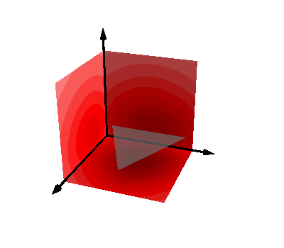
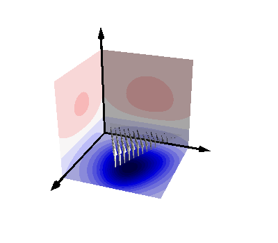
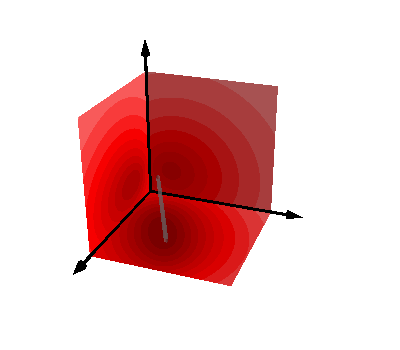
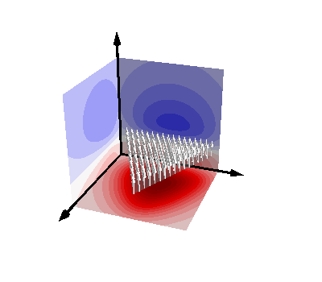

Note
Click here to download the full example code
Plot different field patterns the basic integrals¶
import numpy as np
import matplotlib.pyplot as plt
from mayavi import mlab
import trimesh
from bfieldtools.integrals import triangle_potential_uniform
from bfieldtools.integrals import triangle_potential_dipole_linear
from bfieldtools.integrals import gamma0
from bfieldtools.integrals import omega
from bfieldtools.utils import tri_normals_and_areas
%% Create there orthogonal planes
points = np.array([[0, 0, 0], [1, 0.5, 0], [0, 1, 0]]) + 0.15
points[:, 2] += 0.1
tris = np.array([[0, 1, 2]])
p_tris = points[tris]
mesh = trimesh.Trimesh(points, tris, process=False)
# Evaluation points
points2 = np.array([[-0.01, 1, 1], [-0.01, 1, 0], [-0.01, 0, 0], [-0.01, 0, 1]]) * 1.2
tris2 = np.array([[0, 1, 2], [2, 3, 0]])
mesh2 = trimesh.Trimesh(points2, tris2)
for ii in range(7):
mesh2 = mesh2.subdivide()
points3 = np.array([[1, 1, -0.01], [1, 0, -0.01], [0, 0, -0.01], [0, 1, -0.01]]) * 1.2
mesh3 = trimesh.Trimesh(points3, tris2)
for ii in range(7):
mesh3 = mesh3.subdivide()
points4 = np.array([[1, -0.01, 1], [1, -0.01, 0], [0, -0.01, 0], [0, -0.01, 1]]) * 1.2
mesh4 = trimesh.Trimesh(points4, tris2)
for ii in range(7):
mesh4 = mesh4.subdivide()
def plot_axes():
axes_points = np.zeros((3, 3))
axes = np.eye(3) * 0.3
vectors = mlab.quiver3d(*axes_points, *axes, mode="arrow", color=(0, 0, 0))
vectors.glyph.glyph.scale_factor = 1.5
vectors.glyph.glyph_source.glyph_source.tip_length = 0.1
vectors.glyph.glyph_source.glyph_source.tip_radius = 0.03
vectors.glyph.glyph_source.glyph_source.shaft_radius = 0.01
# Difference vectors
RR2 = mesh2.vertices[:, None, None, :] - p_tris[None, :, :, :]
RR3 = mesh3.vertices[:, None, None, :] - p_tris[None, :, :, :]
RR4 = mesh4.vertices[:, None, None, :] - p_tris[None, :, :, :]
tn, ta = tri_normals_and_areas(points, tris)
for ii, func in enumerate(
(triangle_potential_uniform, triangle_potential_dipole_linear, gamma0, omega)
):
mlab.figure(bgcolor=(1, 1, 1))
# Plot shape and potential
print(func)
if ii == 0:
pot2 = func(RR2, tn)[:, 0]
pot3 = func(RR3, tn)[:, 0]
pot4 = func(RR4, tn)[:, 0]
mlab.triangular_mesh(
*mesh.vertices.T, mesh.faces, color=(0.5, 0.5, 0.5), opacity=0.7
)
if ii == 1:
pot2 = func(RR2, tn, ta)[:, 0, 1]
pot3 = func(RR3, tn, ta)[:, 0, 1]
pot4 = func(RR4, tn, ta)[:, 0, 1]
mlab.triangular_mesh(
*mesh.vertices.T, mesh.faces, color=(0.5, 0.5, 0.5), opacity=0.2
)
meshq = mesh.copy()
for jj in range(4):
meshq = meshq.subdivide()
u = np.zeros(meshq.vertices.shape)
r = meshq.vertices
r2 = np.zeros(r.shape + (3,))
r2[:, 1] = r
r2[:, 0] = mesh.vertices[0]
r2[:, 2] = mesh.vertices[2]
u[:, 2] = np.linalg.det(r2) / np.linalg.det(mesh.vertices)
q = mlab.quiver3d(*r.T, *u.T, colormap="gray", mode="arrow")
q.glyph.glyph.scale_factor = 0.25
if ii == 2:
pot2 = func(RR2)[:, 0, 2]
pot3 = func(RR3)[:, 0, 2]
pot4 = func(RR4)[:, 0, 2]
mlab.plot3d(
*points[0:2].T, color=(0.5, 0.5, 0.5), opacity=0.5, tube_radius=0.02
)
if ii == 3:
pot2 = func(RR2)[:, 0]
pot3 = func(RR3)[:, 0]
pot4 = func(RR4)[:, 0]
mlab.triangular_mesh(
*mesh.vertices.T, mesh.faces, color=(0.5, 0.5, 0.5), opacity=0.5
)
u = np.zeros(meshq.vertices.shape)
u[:, 2] = 1
r = meshq.vertices
q = mlab.quiver3d(*r.T, *u.T, colormap="gray", mode="arrow")
q.glyph.glyph.scale_factor = 0.2
plot_axes()
M = max(max(abs(pot2)), max(abs(pot3)), max(abs(pot4)))
for m, p in zip((mesh2, mesh3, mesh4), (pot2, pot3, pot4)):
s = mlab.triangular_mesh(
*m.vertices.T, m.faces, scalars=p, colormap="seismic", vmin=-M, vmax=M
)
s.actor.mapper.interpolate_scalars_before_mapping = True
s.module_manager.scalar_lut_manager.number_of_colors = 32
# Move camera a bit
s.scene.camera.pitch(-2)
s.scene.camera.azimuth(-25)
s.scene.camera.elevation(-10)
s.scene.camera.orthogonalize_view_up()
s.scene.camera.pitch(1)
s.scene.camera.orthogonalize_view_up()
- 
- 
- 
- 
Out:
<function triangle_potential_uniform at 0x7f96c667da70>
<function triangle_potential_dipole_linear at 0x7f96c667dcb0>
<function gamma0 at 0x7f96c667d710>
<function omega at 0x7f96c667d7a0>
Total running time of the script: ( 0 minutes 1.909 seconds)